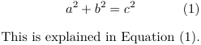
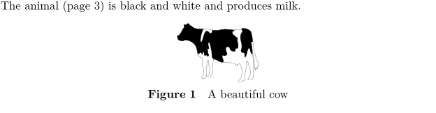

Contents
Summary
The command \definereferenceformat is used for predefining reference formats.
Settings
| \definereferenceformat[...][...][...=...,...] | |
| [...] | name |
| [...] | name |
| ...=...,... | inherits from \setupreferenceformat |
Description
Predefine reference text, so that for example you won't have to type
\in{Equation}[eq:somelabel]
all the time.
Examples
Example 1
-
\definereferenceformat [ineq] [left=(, right=), text=Equation~,] \placeformula[eq:pythagoras] \startformula a^2+b^2=c^2 \stopformula This is explained in \ineq[eq:pythagoras].
- 
Example 2
The label option uses a defined \labeltext instead of an explicit text.
-
\setcounter[userpage][4] \definereferenceformat [atfig] [label=page, type=page] The animal (\atfig[fig:cow]) is black and white and produces milk. \placefigure[][fig:cow]{A beautiful cow}{\externalfigure[cow][width=2cm]}
- 
(the page number is off-by-one because of how the wiki creates its bitmaps)
Notes
See also
- \setupreferenceformat
- strc-ref.mkvi
- \in for default references
- \at for referencing using a page number
- \about for referencing using the actual text
- \setuplabeltext